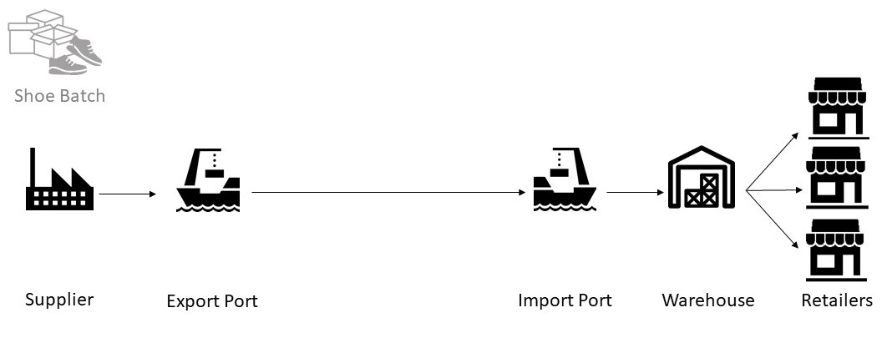

Advanced Example¶
This is a step-by-step tutorial on how to develop and experiment with a advanced discrete event simulation model using pydsol-model.
Example can be found at ./examples/advanced_example.py.
Step-by-Step Tutorial¶
We want to create an advanced discrete event simulation model of a stylized real-world shoes supply chain, and run experiments with this model. A batch of shoes is made by the supplier, then transported over land by truck to the export port. This batch is processed by the export port, and put on a container ship to the import port. The import port loads the batch of shoes off the ship and processes it. Next, the batch of shoes is transported over land to the warehouse. The warehouse divides the batch of shoes into smaller batches to transport (via truck) to the three retailers. The batch of shoes is equally divided over the retailers in City A, B and C. We define the interarrival time of the batch of shoes as input arrival time of 1.5, meaning that approximately every 1.5 days a new batch of shoes is created by the supplier. Other parameters are defined in the code itself, and are based on a data of a real-world fashion supply chain. The runtime of the model is 364 days (1 year) and we run it for 10 replication for an experiment. As output statistic, the average time of a batch of shoes in the model, and the quantity of shoes in the batch is chosen. The units used in the model are kilometers and days. See a conceptualization of the shoe supply chain in the figure below.
{kind=link}
First, import the following statements. Set logger level to DEBUG to inspect the entities and model objects. For experiments, the advice is to set logger level to INFO.
import copy
import numpy as np
import itertools
import statistics
import time
from pydsol.core.experiment import SingleReplication
from pydsol.core.model import DSOLModel
from pydsol.core.simulator import DEVSSimulatorFloat
from pydsol.model.entities import Entity, Vehicle
from pydsol.model.source import Source
from pydsol.model.server import Server
from pydsol.model.sink import Sink
from pydsol.model.link import Link
import logging
from pydsol.model.basic_logger import get_module_logger
logger = get_module_logger(__name__, level=logging.DEBUG)
We start with creating the item of interest for this simulation, i.e., the entity.
For this model, we are interested in batches of shoes - a fashion item that is regularly used
and distributed internationally. Thus, we create an child of the type Entity called ShoeBatch.
A shoe batch has the attribute quantity, meaning the amount of shoes that are in that batch. Also,
we want to keep track of the amount of time this batch spend in the system using the attribute
time_in_system.
class ShoeBatch(Entity):
def __init__(self, simulator, t, **kwargs):
super().__init__(simulator, t, **kwargs)
self.quantity = round(np.random.uniform(100, 150), 0)
self.start_time = self.simulator.simulator_time
self.time_in_system = 0
def __repr__(self):
return self.name
This shoe batch is transported from origin to destination over land using a truck. This Truck inherits
the class Vehicle. The default speed of the truck is a Triangular distribution with minimum of 0 km/h, mode of 100 km/h,
and maximum of 120 km/h. Also, the truck is not always immediately available and therefore, a interarrival
time is defined. This interarrival time determines the possible delay of the truck for picking up
the batch of shoes.
class Truck(Vehicle):
def __init__(self, simulator, **kwargs):
self.speed = np.random.triangular(0, 100, 120) * 24 # km/h to day
if "vehicle_speed" in kwargs:
self.speed = np.random.triangular(0, kwargs["vehicle_speed"], 120) * 24
super().__init__(simulator, self.speed, **kwargs)
self.interarrival_distribution = np.random.triangular
self.interarrival_times = (0, 0.2, 0.5)
This shoe batch is transported from origin to destination over sea using a container ship. Similar to the Truck, this
ContainerShip inherits the class Vehicle. The default speed of the truck is a Triangular distribution with minimum of 10 km/h, mode of 18 km/h,
and maximum of 25 km/h. Also, the container ship is not always immediately available and therefore, a interarrival
time is defined. This interarrival time determines the possible delay of the container ship for picking up
the batch of shoes at the ports.
class ContainerShip(Vehicle):
def __init__(self, simulator, **kwargs):
# km/h to knots, and one knot is one nautical mile per hour
self.speed = np.random.triangular(10 * 1.85, 18 * 1.85, 25 * 1.85)
if "vehicle_speed" in kwargs:
self.speed = np.random.triangular(10 * 1.85, kwargs["vehicle_speed"], 25 * 1.85)
super().__init__(simulator, self.speed, **kwargs)
self.interarrival_distribution = np.random.triangular
self.interarrival_times = (0, 5, 14)
Supplier is where the batches of shoes are created, so this is the Source. To ensure output on
the quantity of the batches of shoes, we set the attribute list_quantity where the quantity
of the created entities are added in def exit_source. To add the interarrival delay of the Truck
we schedule an additional event that is only triggered after the interarrival delay time: def exit_with_vehicle.
class Supplier(Source):
def __init__(self, simulator, interarrival_time, **kwargs):
super().__init__(simulator, interarrival_time, **kwargs)
self.list_quantity = []
def exit_source(self, entity: ShoeBatch, **kwargs):
# Tally quantity
self.list_quantity.append(entity.quantity)
super().exit_source(entity, **kwargs)
def exit_output_node(self, entity: Truck, **kwargs):
# Add interarrival delay of Truck
interarrival_delay = entity.interarrival_distribution(*entity.interarrival_times)
self.simulator.schedule_event_rel(interarrival_delay, self, "exit_with_vehicle", entity=entity)
def exit_with_vehicle(self, entity, **kwargs):
super().exit_output_node(entity, **kwargs)
For both export port and import port, the class Port (a child of class Server) is defined. The class
Port is used for two ports, so we add the attribute location to it for trackability. Similar to the
Supplier, we also add the interarrival delay of the vehicles to the Port. For the export port, this entails
the ContainerShip and for the import port, this entails the Truck.
class Port(Server):
def __init__(self, simulator, processing_time, capacity=1, distribution=np.random.triangular, **kwargs):
super().__init__(simulator, capacity=capacity, distribution=distribution, processing_time=processing_time,
**kwargs)
self.location = kwargs['location']
self.name = self.name + " " + self.location
def exit_output_node(self, entity: [Truck, ContainerShip], **kwargs):
# Add interarrival delay
interarrival_delay = entity.interarrival_distribution(*entity.interarrival_times)
self.simulator.schedule_event_rel(interarrival_delay, self, "exit_with_vehicle", entity=entity)
def exit_with_vehicle(self, entity: [Truck, ContainerShip], **kwargs):
logging.debug(
"Time {0:.2f}: {1} exits {2}".format(self.simulator.simulator_time, entity.name, self.name))
super().exit_output_node(entity, **kwargs)
Next, the class Warehouse is defined that inherits properties for the processing station Server.
To divide the batch of shoes into smaller batches, a certain processing time is needed. Each resource
in the Server needs to get a new def processing function, since the division of the batch of shoes
happens there. Since each smaller batch of shoes requires the same processing time, we do want to
keep the original processing function of the resources using self.processing_function_resource.
In def processing, we divide the batch of shoes into three equally distributed smaller batches using
the static method divide_entity. This return a list of smaller batches, and this “new” entity
is processed by the resource. When entering the output node of the server (def enter_output_node), each of the smaller batches
are transported to the three retailers. The batches are transported using a Truck with a certain
interarrival delay.
class Warehouse(Server):
def __init__(self, simulator, processing_time, **kwargs):
super().__init__(simulator, processing_time=processing_time, **kwargs)
# Override function processing - Resource
self.processing_function_resource = self.resources[0].processing
for resource in self.resources:
resource.processing = self.processing
def enter_resource(self):
"""Schedules the event to transfer into the resource and starts processing.
Parameters
----------
entity: object
the target on which a state change is scheduled.
"""
self.simulator.schedule_event_rel(self.transfer_in_time, self, "processing")
def processing(self, **kwargs):
# This only works if you have one resource, i.e., one warehouse
for resource in self.resources:
entity = resource.processing_entity
if "divide_quantity" in self.kwargs:
batches_product = self.divide_entity(entity, self.kwargs["divide_quantity"])
self.processing_function_resource(processing_entity=batches_product)
@staticmethod
def divide_entity(entity: ShoeBatch, copy_quantity: int):
copies = []
for i in range(copy_quantity):
copy_entity = copy.copy(entity)
copy_entity.quantity = entity.quantity / copy_quantity
copy_entity.name = entity.name + "." + str(i)
copies.append(copy_entity)
return copies
def enter_output_node(self, entity, **kwargs):
# List of products due to dividing
for batch in entity:
super().enter_output_node(batch, **kwargs)
def exit_output_node(self, entity: Truck, **kwargs):
# Add interarrival delay of Truck
interarrival_delay = entity.interarrival_distribution(*entity.interarrival_times)
self.simulator.schedule_event_rel(interarrival_delay, self, "exit_with_vehicle", entity=entity)
def exit_with_vehicle(self, entity, **kwargs):
super().exit_output_node(entity, **kwargs)
The smaller batches of shoes arrive at the Retailer, the final station of the stylized shoe supply chain model.
Thus, the Retailer inherits the properties of the Sink. The attribute location is added again
for trackabilty reasons as more than 1 retailer is present. Another attribute is the entities_of_system,
a list of each entity in the system. Before destroying the entity ShoeBatch, we calculate
the time in system and add the entity to this list for getting output statistics.
class Retailer(Sink):
def __init__(self, simulator, transfer_in_time: [float, int], **kwargs):
super().__init__(simulator, transfer_in_time=transfer_in_time, **kwargs)
self.location = kwargs['location']
self.name = self.name + " " + self.location
self.entities_of_system = []
def destroy_entity(self, entity: Truck, **kwargs):
for product in entity.entities_on_vehicle:
product.time_in_system = self.simulator.simulator_time - product.start_time
# Add value to list
self.entities_of_system.append(product)
super().destroy_entity(product)
del entity
Now we have all the model components to develop our shoe supply chain discrete event simulation model.
The first step to develop the simulation is to define the DSOLModel using a child class called
AdvancedExampleModel. The additional inputs are the input parameters using input_params, and the
seed for reproducibility. Other attributes are for getting the output statistics: the supplier and retailers.
class AdvancedExampleModel(DSOLModel):
def __init__(self, simulator, input_params, **kwargs):
super().__init__(simulator, **kwargs)
self.input_params = input_params
self.seed = kwargs["seed"] if "seed" in kwargs else 1
self.supplier = None
self.retailers = []
The second step is to construct the simulation model. First, we reset the model classes for getting the correct id numbers. Then, we set the seed using numpy. Following, for each model components, we create an instance with the different (processing) times, entity types, vehicle types, following the conceptualization and parametrization of our supply chain. Next, the links including the link distances are created. Based on our conceptualization, we define the structure of the model using next.
def construct_model(self):
self.reset_model()
np.random.seed(self.seed)
print("\nReplication starts...")
# Create model
supplier = Supplier(self.simulator, interarrival_time=self.input_params["interarrival_time"],
entity_type=ShoeBatch, vehicle_type=Truck)
export_port = Port(self.simulator, processing_time=(1, 2, 2), vehicle_type=ContainerShip, location="Export O")
import_port = Port(self.simulator, processing_time=(1, 2, 3), vehicle_type=Truck, location="Import D")
warehouse = Warehouse(self.simulator, processing_time=(0.5, 1, 2), vehicle_type=Truck, divide_quantity=3)
retailer_1 = Retailer(self.simulator, transfer_in_time=0.2, location="City A")
retailer_2 = Retailer(self.simulator, transfer_in_time=0.1, location="City B")
retailer_3 = Retailer(self.simulator, transfer_in_time=0.3, location="City C")
link_1 = Link(self.simulator, supplier, export_port, 30)
link_2 = Link(self.simulator, export_port, import_port, 2000)
link_3 = Link(self.simulator, import_port, warehouse, 100)
link_4 = Link(self.simulator, warehouse, retailer_1, 55)
link_5 = Link(self.simulator, warehouse, retailer_2, 83)
link_6 = Link(self.simulator, warehouse, retailer_3, 22)
# Set structure
supplier.next = link_1
link_1.next = export_port
export_port.next = link_2
link_2.next = import_port
import_port.next = link_3
link_3.next = warehouse
warehouse.next = [link_4, link_5, link_6]
link_4.next = retailer_1
link_5.next = retailer_2
link_6.next = retailer_3
# For statistics
self.supplier = supplier
self.retailers = [retailer_1, retailer_2, retailer_3]
def reset_model(self):
classes = [ShoeBatch, Supplier,
Port, Warehouse, Retailer,
Link, Truck, ContainerShip]
for i in classes:
i.id_iter = itertools.count(1)
The third step is to define the output statistics using def get_output_statics. We calculate
the average time in system for each batch of shoe, and the average quantity of each batch of shoe
using the lists of the supplier and retailers. The outcomes are presented in a dictionary.
def get_output_statistics(self):
# Average Time in System
average_product_time_in_system = []
for retailer in self.retailers:
average_product_time_in_system += [product.time_in_system for product in retailer.entities_of_system]
# Average quantity of the shoe batch
average_quantity = self.supplier.list_quantity
outcomes = {"Time_In_System": statistics.mean(average_product_time_in_system),
"Quantity": statistics.mean(average_quantity)}
return outcomes
The simulation model is now ready to be ran. The input parameters are defined first: we want 10 replications of 364 days,
with an interarrival time of 1.5 days. For each replication in the experiment, we create a new instance
of the AdvancedExampleModel with a different seed. This seed is based on the number of that replication.
To get the output statistics, we have to ensure that the simulation model ran to the run time.
pydsol-core works with different Threads, so it requires an extra while loop. The results
of each replication are added to a dictionary, and can be used for data analysis. When all replications
are finished, the experiment is finished and the stylized shoe supply chain can be analyzed.
if __name__ == "__main__":
# Input
NUM_REPLICATIONS = 10
RUN_TIME = 364 # days
INPUT_PARAMS = {"interarrival_time": 1.5}
# Experiment
experiment_output = {}
for rep in range(NUM_REPLICATIONS):
simulator = DEVSSimulatorFloat("sim")
model = AdvancedExampleModel(simulator, INPUT_PARAMS, seed=rep)
replication = SingleReplication(str(rep), 0.0, 0.0, RUN_TIME)
simulator.initialize(model, replication)
simulator.start()
while simulator.simulator_time < RUN_TIME:
time.sleep(0.01)
experiment_output[rep + 1] = model.get_output_statistics()
logger.info("Experiment with {0} replications is finished".format(NUM_REPLICATIONS))
Extensions¶
An example of extending the advanced example is to add daily statistics using a Timer. Create a Timer like the code below, and add the model object and the method on which you want the daily statistics. Timer can also be used to trigger events that happen every day/hour/any time. Relative time to set the timer is used as input. Every time, this timer reschedules this event.
class Timer(object):
def __init__(self, simulator, time):
self.simulator = simulator
self.time = time
def set_event(self, source_stats, method_stats, **kwargs):
self.simulator.schedule_event_now(source_stats, method_stats, **kwargs)
# New event for statistics one day later
self.simulator.schedule_event_rel(self.time, self, "set_event", source_stats=source_stats,
method_stats=method_stats, **kwargs)
Another extension is using the package networkx to automatically create
a discrete event simulation model from a graph. A (directed) graph with nodes and edges including
attributes can easily created using networkx. This graph can be an input from the child class
of DSOLModel, and code to automatically construct the model based on this attributes in this graph can be generated.
If you wish to get help on this or see an example, please contact Isabelle van Schilt.